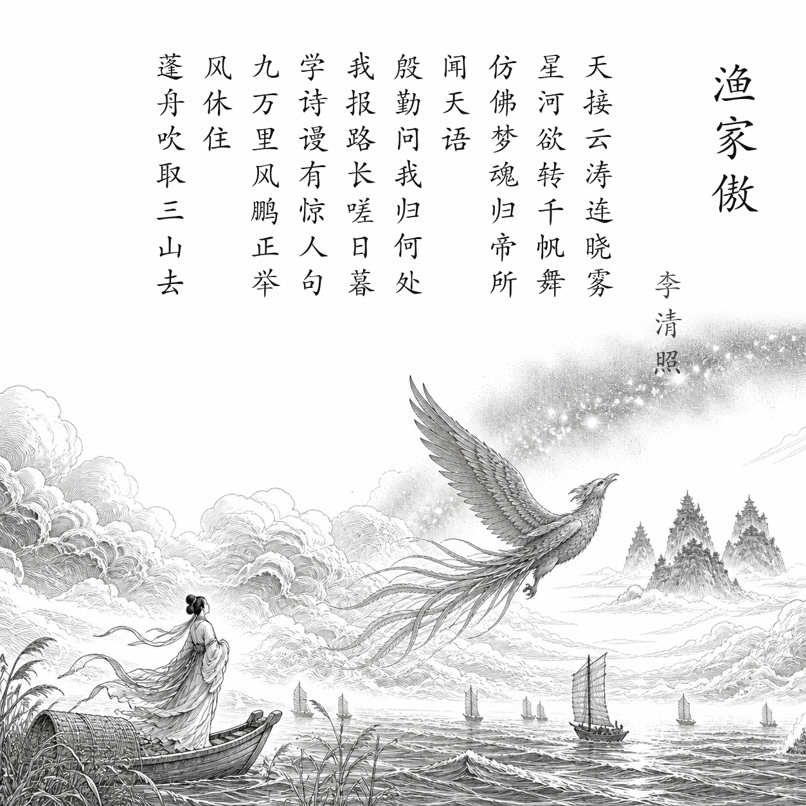

宋 · 李清照
渔家傲
天接云涛连晓雾
天接云涛连晓雾，星河欲转千帆舞。
仿佛梦魂归帝所，闻天语，殷勤问我归何处。
我报路长嗟日暮，学诗谩有惊人句。
九万里风鹏正举。风休住，蓬舟吹取三山去！
白话翻译
天空连接翻涌的云涛和清晨雾气，银河将转，无数帆船仿佛在风浪中起舞。
梦魂仿佛回到天帝居所，听见天帝殷切地问我要归向何方。
我回答说路途漫长，又叹天色已晚；即使能写出惊人的诗句，也终究没有实际用处。
大鹏正乘九万里长风高飞。风啊不要停，把我的小船吹到海上三座仙山去吧！
为什么写这首诗
南渡后李清照丧夫、藏书散失，又随行朝辗转避乱。1130年春她曾雇船入海，经历风涛。词把真实海上感受化作梦境：天帝询问归处，她却感叹路长日暮，最后借大鹏和仙山表达冲破现实、寻找理想归宿的愿望。
关于作者
李清照（1084—约1155），号易安居士。她不仅善写婉约情思，也能写出气象雄奇的作品；这首《渔家傲》正展示了她豪迈、坚韧的一面。